Нанкин — история, достопримечательности и кухня
История Нанкина
Город Нанкин называют местом зарождения китайской цивилизации.
Он является одной из четырех древних столиц в Китае;наряду с Пекином, Сианем и Лояном.
Население 9,5 млн человек.
История города Нанкина насчитывает более двух тысяч лет, в течение которых город неоднократно становился столицей 9 династий и Китайской Республики.
Впервые Нанкин (бывш.Цзиньлин), стал важным политическим, культурным и экономическим центром в период Троецарствия.
Во времена Шести династий, с 220 по 589 гг., Цзянькан (другое древнее название Нанкина) стал крупнейшим городом в мире с населением более одного миллиона человек. Его вместе с Римом называли «центрами древнейших мировых цивилизаций».
Особенно значимым периодом в истории Нанкина стало время, когда он служил столицей династии Мин (1368-1644 гг.).
В эпоху Китайской Республики, начиная с 1912 года, город Нанкин также играл важную роль, поскольку в нем было установлено временное правительство Китайской Республики под руководством Сунь Ятсена.

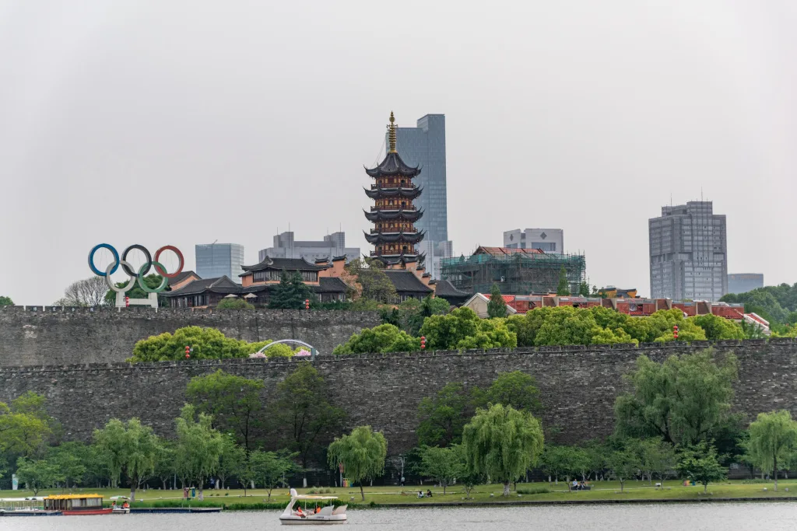
11 апреля:
Храм Конфуция (夫子庙, Fūzǐ Miào) + канал Циньхуай
Осмотр храма (вход ~30 юаней), прогулка по каналу
Gongyuan St, Qinhuai District (秦淮区贡院街)
Метро: Fuzimiao (夫子庙站)
Улица Лаомэнь (老门东, Lǎomén Dōng)
South of Zhonghua Gate, Qinhuai District (秦淮区中华门南)
Метро: 15 мин пешком или 1 ст. м. Wudingmen (武定门站)
12 апреля:
Мемориал жертвам Нанкинской резни (侵华日军南京大屠杀遇难同胞纪念馆, Qīnhuá Rìjūn Nánjīng Dàtúshā Yùnàn Tóngbāo Jìniànguǎn)
418 Shuiximen St, Jianye District (建邺区水西门大街418号)
Метро: Yunjinlu (云锦路站)
Гора Цзыцзинь (紫金山, Zǐjīn Shān)
Zhongshan Scenic Area, Xuanwu District (玄武区钟山风景区内)
Метро: Xiamafang (下马坊站)
Мавзолей Сунь Ятсена (中山陵, Zhōngshān Líng)
7 Xiangshan Rd, Xuanwu District (玄武区紫金山南麓钟山风景区内)
Метро: Muxuyuan (苜蓿园站) + автобус № 20 до входа
12 апреля (вариант 2):
Усыпальница императора Хунъу (明孝陵, Míng Xiào Líng)
7 Xiangshan Rd, Xuanwu District (玄武区紫金山南麓)
Метро: Muxuyuan (苜蓿园站) 
ЕДА:
отварная в соленой воде утка 盐水鸭 «yánshuǐ yā»

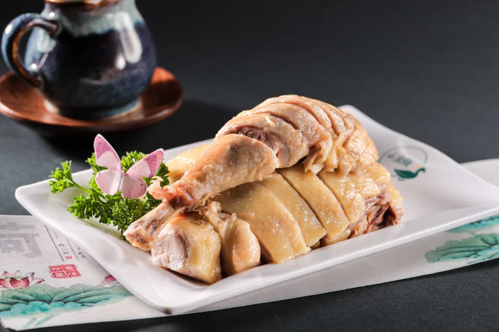
самый известный деликатес Нанкина и одно из топ-10 лучших классических блюд провинции Цзянсу в категории «Китайская кухня». Ее любят не только местные жители, но и многие приезжие. Процесс производства нанкинской соленой утки отличается от многих традиционных маринованных продуктов. В нем используется низкотемпературный метод приготовления, благодаря которому мясо утки получается особенно нежным и сочным.
запеченная утка 烤鸭 «kǎoyā»

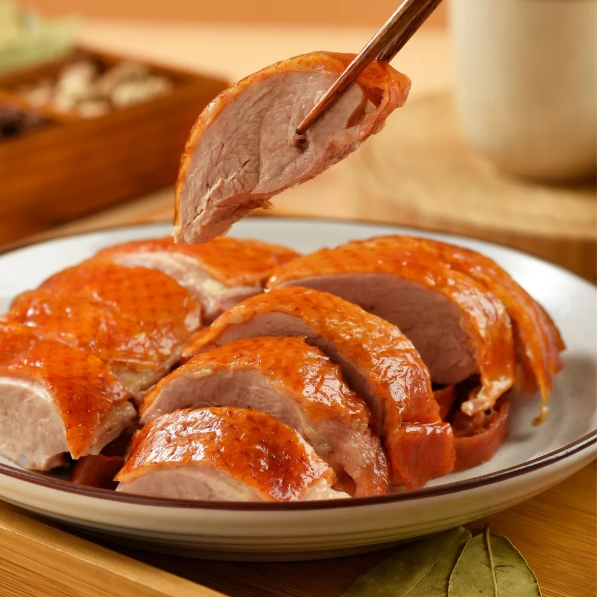
традиционное блюдо Нанкина, которое считают «создателем» более популярной версии – пекинской утки. Нанкинскую утку любят за хрустящую кожу и нежное мясо, а также за то, что она получается не такой жирной, как в других регионах.
нанкинские вонтоны 南京小馄饨«nánjīng xiǎo húntún»

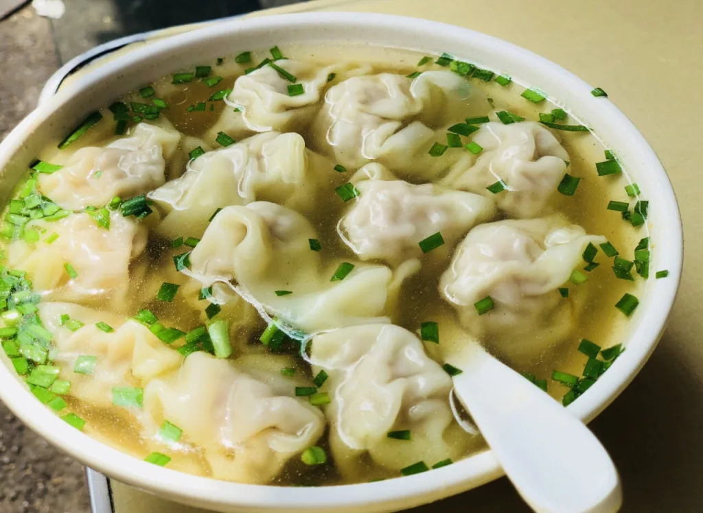
маленькие пельмени из тонкого теста, которые подаются в бульоне с зеленым луком. Отличное блюдо для тех, кто хочет согреться.
цзиньлинские паровые пирожки с бульоном 金陵汤包 «jīnlíng tāng bāo»

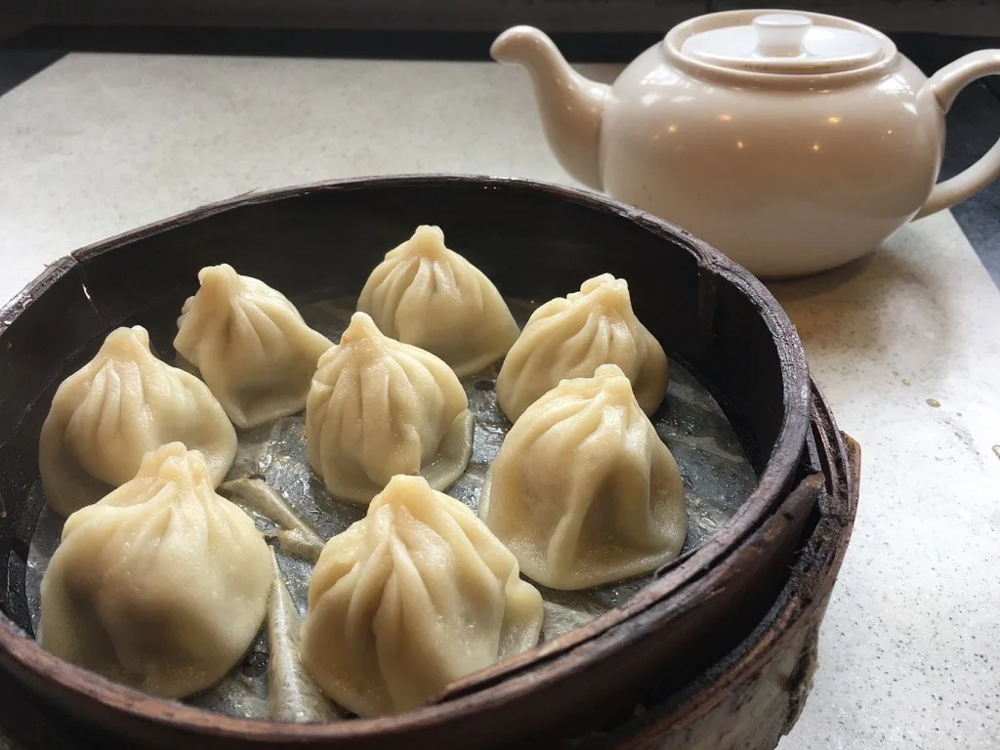
традиционное блюдо старого Нанкина, которое славится насыщенными ароматным бульоном, который получается за счет приготовления на пару пирожков из тонкого теста с богатой начинкой из свежего мяса.
Пряная лапша с уткой (汤面 tāngmiàn) в Liu Chang Xing (刘长兴)
Утиная кровь с вермишелью (鸭血粉丝汤 yāxiě fěnsī tāng) в кафе Guihua Duck (桂花鸭)

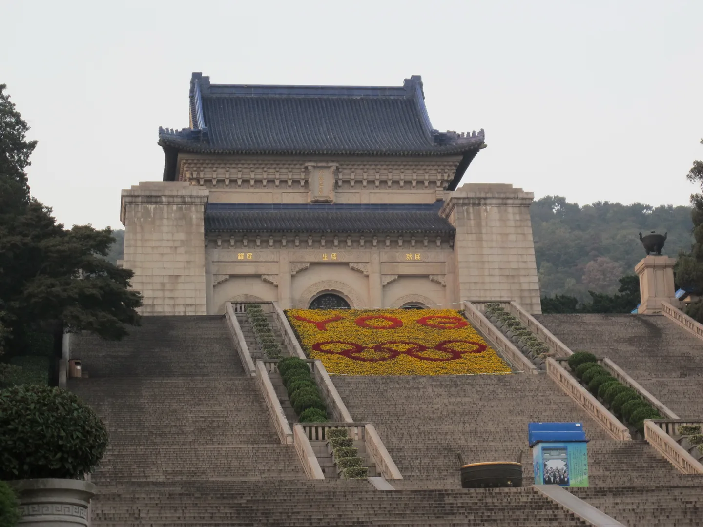
Мавзолей первого президента Китая
1. Мавзолей Сунь Ятсена (中山陵, Zhōngshān Líng)
Величественный мавзолей первого президента Китая у подножия горы Цзыцзинь.
Подняться по 392 ступеням для панорамы Нанкина.
7 Xiangshan Rd, Xuanwu District (玄武区紫金山南麓钟山风景区内).
Метро: Muxuyuan (苜蓿园站) + автобус № 20 до входа

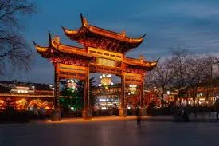
Храм Конфуция
2. Храм Конфуция (夫子庙, Fūzǐ Miào)
Сердце старого Нанкина с каналами, храмами и уличной едой.
Gongyuan St, Qinhuai District (秦淮区贡院街).
Метро: Fuzimiao (夫子庙站)

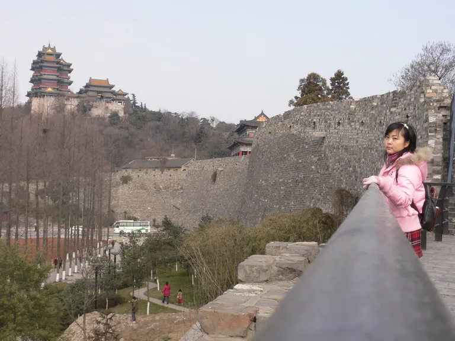
Нанкинская городская стена
3. Нанкинская городская стена (南京城墙, Nánjīng Chéngqiáng)
Одна из самых длинных древних стен в мире (более 35 км).
Пройти участок от ворот Чжунхуамен (中华门) — здесь сохранились секретные бункеры.
1 Zhonghuamen, Qinhuai District (秦淮区中华门内).
Метро: Zhonghuamen (中华门站)

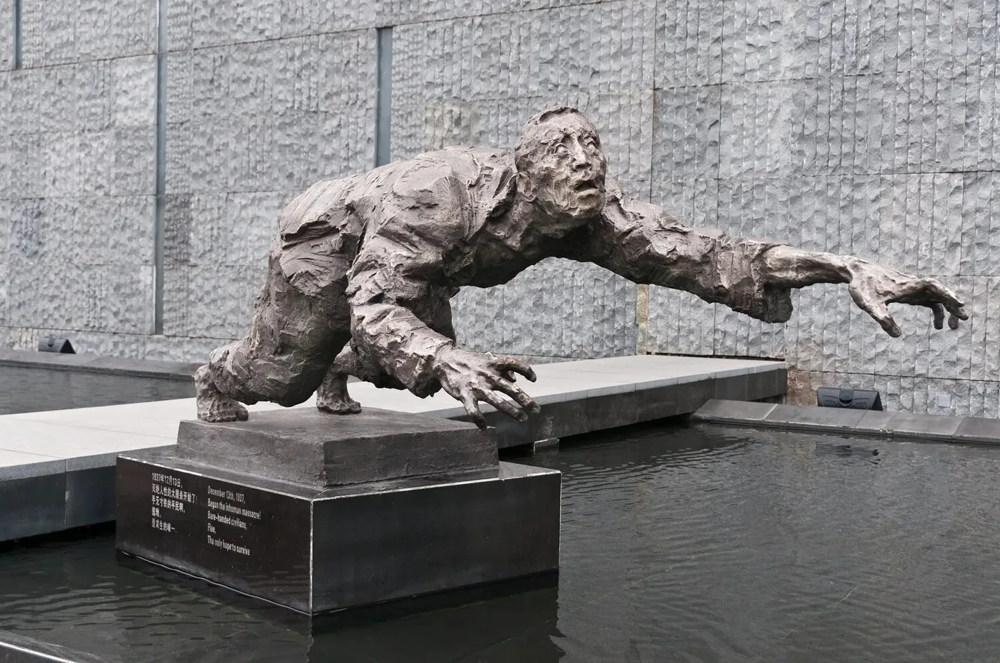

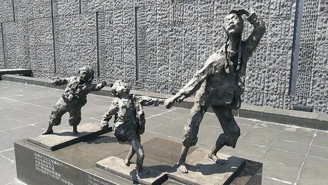
4. Мемориал жертвам Нанкинской резни (侵华日军南京大屠杀遇难同胞纪念馆, Qīnhuá Rìjūn Nánjīng Dàtúshā Yùnàn Tóngbāo Jìniànguǎn)
Важный памятник истории, напоминающий о трагедии 1937 года.
Долгая прогулка на 2–3 часа — экспозиция эмоционально тяжелая, но необходимая для понимания.
418 Shuiximen St, Jianye District (建邺区水西门大街418号)
Метро: Yunjinlu (云锦路站)

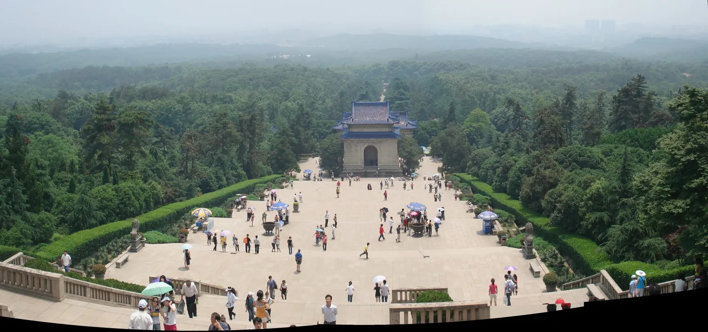
Пурпурная гора
5. Гора Цзыцзинь (紫金山, Zǐjīn Shān)
«Пурпурная гора» с храмами, обсерваторией и канатной дорогой.
Обсерватория Цзыцзинь (紫金山天文台) — старейшая в Китае.
Zhongshan Scenic Area, Xuanwu District (玄武区钟山风景区内).
Метро: Xiamafang (下马坊站)

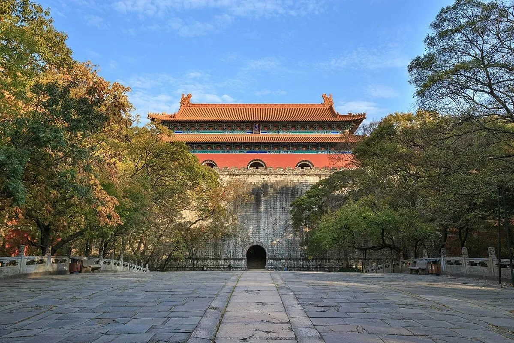
Мавзолей императора
6. Усыпальница императора Хунъу (明孝陵, Míng Xiào Líng)
Гробница основателя династии Мин, объект ЮНЕСКО.
Пройти по «Священной дороге» — аллее каменных животных и воинов.
7 Xiangshan Rd, Xuanwu District (玄武区紫金山南麓).
Метро: Muxuyuan (苜蓿园站)

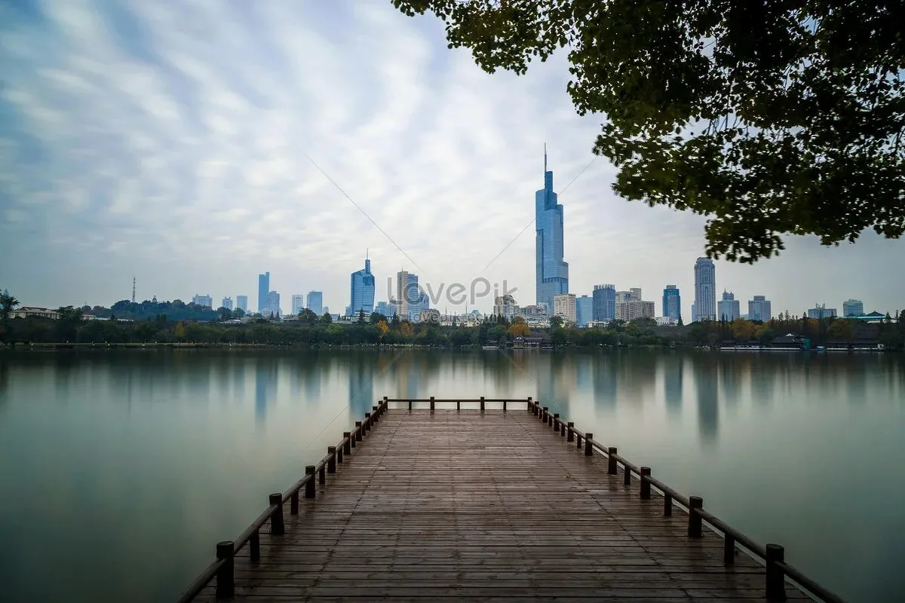
Озеро
7. Озеро Сюаньу (玄武湖, Xuánwǔ Hú)
Крупнейшее городское озеро с островами, храмами и лодочными прогулками.
Адрес: 1 Xuanwu Gate, Xuanwu District (玄武区玄武巷1号).
Метро: Xuanwumen (玄武门站)

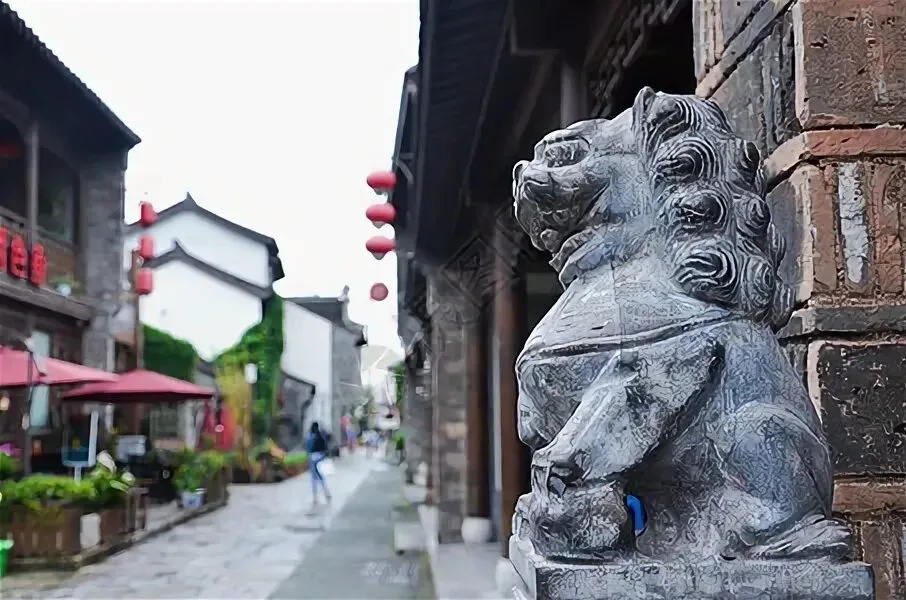
Старый город
8. Улица Лаомэнь (老门东, Lǎomén Dōng)
Отреставрированный исторический квартал с традиционной архитектурой.
Купить сувениры ручной работы в магазине Nanjing Yunjin (南京云锦) — местный шёлк.
Ужин в **«Nanjing Da Pai Dang»** (лучше прийти до 18:00, чтобы занять столы).
- Фото в старых переулках с фонарями.
South of Zhonghua Gate, Qinhuai District (秦淮区中华门南).
Метро: Wudingmen (武定门站)

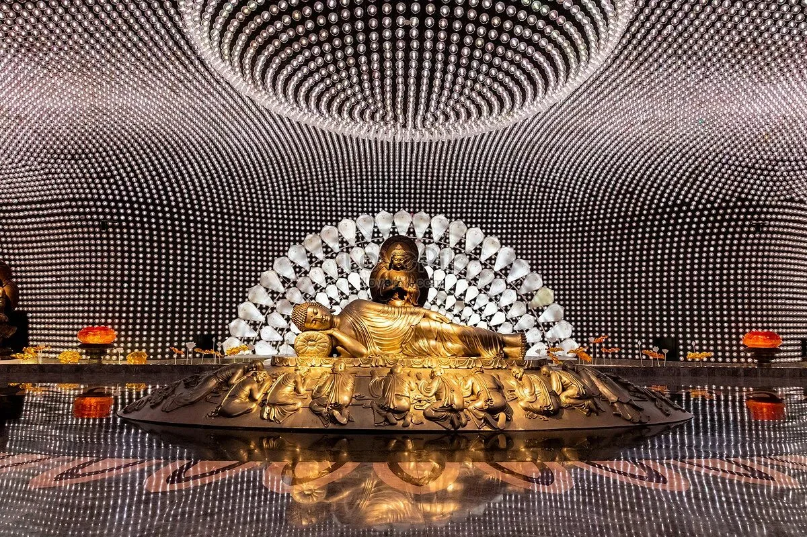
Пагода
9. Пагода Дабаоэнь (大报恩寺, Dàbàoēn Sì)
Современная реконструкция древней пагоды с стеклянным фасадом.
1 Yuhuatai Rd, Qinhuai District (秦淮区雨花路1号).
Метро: Yuhuatai (雨花台站)